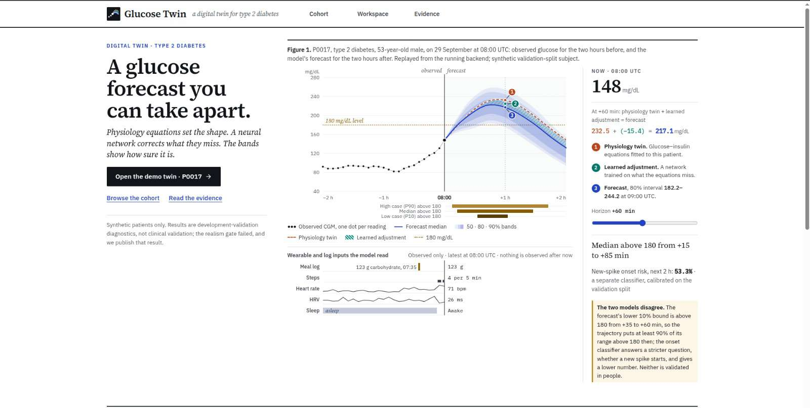
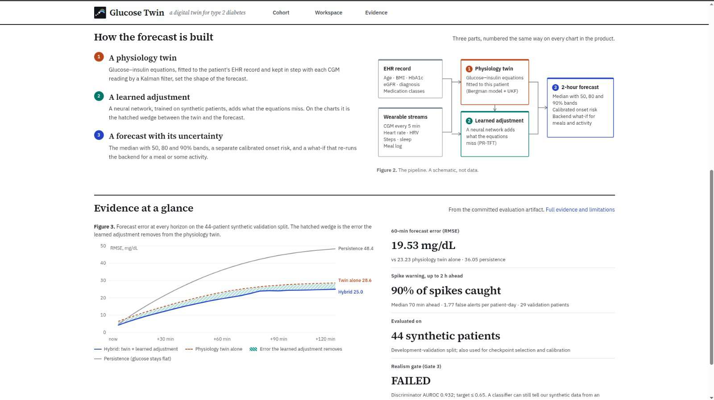
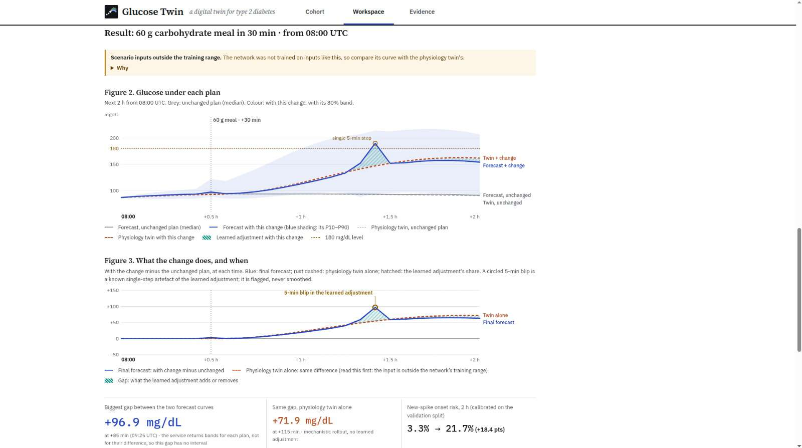
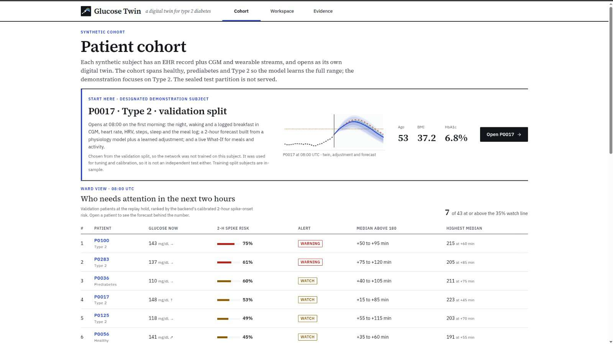
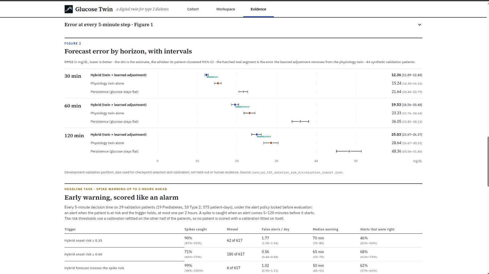
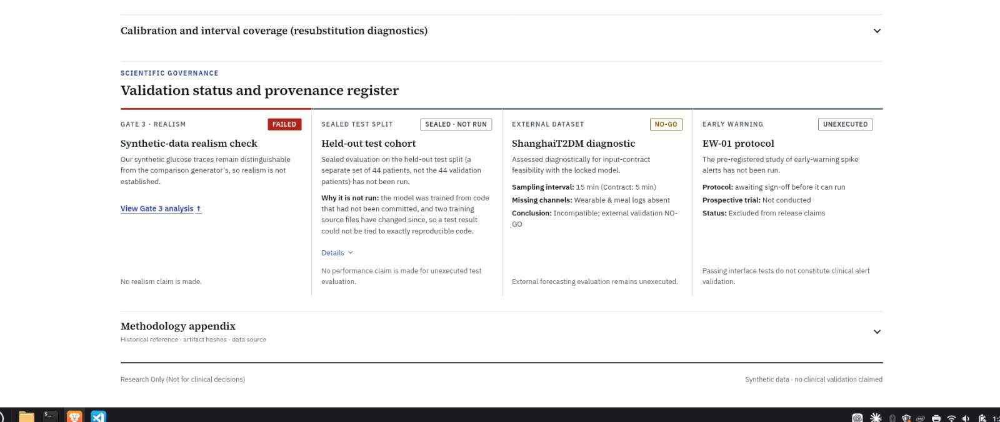
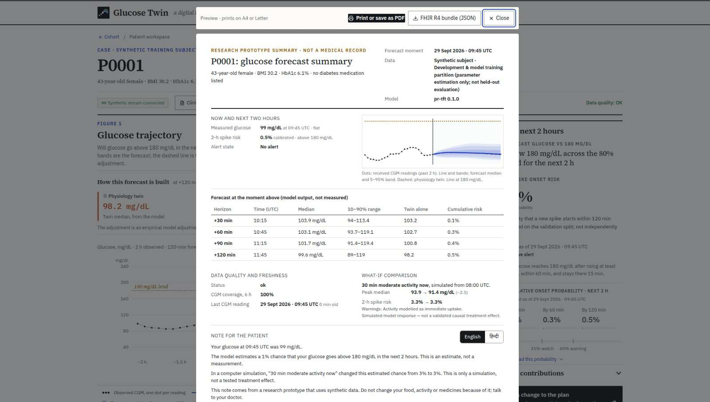

What it is: A physiology-informed digital twin software workstation that forecasts continuous glucose monitor (CGM) readings two hours ahead and provides advance early warnings before postprandial glucose spikes (>180 mg/dL) occur in adults with type 2 diabetes and prediabetes.
Whose problem it is intended to address: Millions of patients and clinicians managing type 2 diabetes. Commercial CGMs only alert after glucose crosses 180 mg/dL (reactive alarms), when it is too late to prevent the excursion. Our system predicts the impending rise 30–60 minutes in advance, giving patients an actionable window for light activity (e.g. a 15-minute walk) or meal moderation.
What we built:
Continuous glucose monitors use a miniature subcutaneous enzymatic sensor to sample interstitial glucose every 5 minutes (288 readings/day). Interstitial fluid glucose lags blood glucose by 5 to 15 minutes due to physiological diffusion time between vascular capillaries and the interstitial matrix.
Under international clinical consensus, postprandial glucose should remain <180 mg/dL (10.0 mmol/L). In our preregistered evaluation protocol, an adverse spike is strictly defined as:
Unlike type 1 diabetes—where insulin boluses dominate glycemic control—type 2 diabetes management relies heavily on meal composition and muscle glucose uptake. Light physical exercise (e.g., a 20-minute post-meal walk) stimulates non-insulin-dependent GLUT4 transporter translocation, clearing glucose from plasma. However, this is effective primarily before or during the early postprandial rise. A 30- to 60-minute advance warning provides a practical, non-pharmacological intervention window.
In this project, a "digital twin" is not a marketing buzzword. It is a mathematically defined computational state model that synchronizes static clinical priors with dynamic wearable observations:

The processing pipeline follows a causal 6-stage architecture where each stage has a clearly defined responsibility and fallback:
[1. Patient Inputs] Static EHR (Age, BMI, HbA1c, eGFR) + Wearables (CGM, HR, Steps, Sleep, Meals)
│
▼
[2. Data Quality Gate] Check 5-min cadence, missingness (<30% gap), sensor range (40–400 mg/dL)
│
▼
[3. UKF Physiology Twin] Nonlinear state estimation: updates glucose, insulin action, gut compartments
│ Outputs: Mechanistic rollout baseline over 24 steps (120 minutes)
│
├───────────────────────────────┐
▼ ▼
[4. PR-TFT Neural Network] [Residual Combination]
Learns residual correction: Final Median = Twin Baseline + Learned Residual
ΔG at 7 quantiles (P05–P95) Bands = Conformal interval adjustments
Discrete-time hazard head Hazard = Isotonic probability calibration
│ │
└───────────────────────────────┘
│
▼
[5. Alert Policy & Safety] Triggers at risk ≥ 0.35 with 120-min cooldown
│ Fallback: If neural network fails, serve twin-only rollout
▼
[6. Workstation UI & FHIR] Next.js charts, What-If simulation, FHIR R4 JSON bundle export
Pure deep learning models are prone to hallucinating physiologically impossible trajectories during sensor dropouts. To guarantee stability, our system anchors every forecast on a biophysical prior:
The Minimal Model cannot capture dawn phenomenon, circadian cortisol variation, physical exercise recovery, or stress. The Physiological-Residual Temporal Fusion Transformer (PR-TFT) learns strictly the residual error ($\Delta G = G_{ ext{actual}} - G_{ ext{twin}}$):
If the neural network crashes, runs out of memory, or fails input validation, the backend automatically serves the UKF physiological rollout alone. The API sets model.fallback_used = true, and the workstation notifies the clinician.

/cohort)Displays all 249 served synthetic subjects (88 Healthy, 107 Prediabetes, 54 Type 2; 205 train, 44 val). Includes a Ward Triage View ranking patients at 08:00 UTC by their 2-hour spike risk (e.g. P0100 at 75%, P0283 at 61%, P0036 at 60%, P0017 at 53%). The 44 sealed test subjects are blocked.
/patients/[id])Observed CGM dots, forecast median, 50/80/90% uncertainty ribbons, physiological twin (dashed line), and learned adjustment (hatched teal wedge). Allows time-scrubbing and anchor pinning to evaluate historical points without future leakage.
Simulates adding a 60g carb meal in 30 minutes, 30 minutes of moderate activity, or skipping usual meals. Medication changes immediately return SCENARIO_UNSUPPORTED. Includes an authentic Indian Dish Selector (29 USDA FNDDS dishes).
Generates an A4/Letter print export, a bilingual patient note (English/Hindi with disclaimer), and an official HL7 FHIR R4 JSON Bundle (LOINC 99504-3, UCUM mg/dL) validated against the official schema.


backend/ukf_twin.py).backend/train_pr_tft.py).deploy/entrypoint.sh on port 7860 under non-root appuser (UID 10001). Internal communication uses http://127.0.0.1:8001.POST /v1/forecasts: Accepts historical CGM, wearable streams, and optional scenario modifications. Returns 24 5-minute trajectory quantiles, conformal bounds, and calibrated spike hazard.GET /v1/subjects/{id}/stream: Server-Sent Events (SSE) streaming real-time CGM readings as if arriving live.GET /v1/subjects/{id}/twin: TwinCard reporting patient EHR priors and estimated physiological parameters.GET /v1/subjects: Enumerates served subject UUIDs and patient IDs (filters out sealed test partition).GET /v1/health: Service liveness, model version (0.1.0), simulator version, and active served subject count (249).A rigorous audit requires exact accountability for all cohorts, partitions, and denominators:
| Cohort Phase | Dataset & Source | Total Size | Train / Val / Test Split | Status & Verification |
|---|---|---|---|---|
| Phase A: Synthetic | generate_health_data_v2 (ODE simulator) |
293 subjects | 205 train / 44 val / 44 test | Served in App: 249 (205 train + 44 val). 44 test subjects strictly sealed. |
| Phase B: Real Locked | CGMacros (PhysioNet 1.0.0, 5-min CGM) | 45 patients | 27 train / 9 val / 9 test | Evaluated in Locked Test: 9 test patients. |
| Phase B: Real Locked | BIG IDEAs (PhysioNet 1.1.3, 5-min CGM) | 16 patients | 9 train / 3 val / 4 test | Evaluated in Locked Test: 2 evaluable test patients (2 excluded for coverage). |
| Phase B: Real Locked | ShanghaiT2DM (Figshare v5, 15-min CGM) | 100 patients | 60 train / 20 val / 20 test | Declared NOT ESTIMABLE: 15-min cadence fails ≥70% 5-min coverage rule. |
| Phase C: External Check 1 | Hall et al. 2018 (mostly normoglycaemic) | 57 participants | Unused external | 64 spike onsets across 1,104 patient-days. Result: NOT CONFIRMED. |
| Phase C: External Check 2 | AZT1D (Type 1 diabetes on AID) | 24 adults | Unused external | 2,814 spike onsets across 988.6 patient-days. Result: NOT MET. |
| Phase C: External Check 2 | Broll et al. (Type 2 diabetes) | 5 patients | Unused external | 104 spike onsets across 51.2 patient-days (descriptive only). |
| Phase D: Future Prereg. | AI-READI (FAIRhub, Dexcom G6) | ~944 T2D patients | Test partition only | FROZEN, UNEXECUTED: Awaiting institutional data access sign-off. |
Source: runs/pr_tft_ablation_arm_d/run_manifest.json & docs/evidence/validation_ceiling_results.json
| Forecast Horizon | PR-TFT Hybrid RMSE [95% CI] | Physics Twin Alone | Persistence Baseline | Relative Error Reduction vs. Physics |
|---|---|---|---|---|
| +30 min | 12.36 mg/dL [11.89–12.84] | 15.24 mg/dL | 21.64 mg/dL | −18.9% |
| +60 min | 19.53 mg/dL [18.56–20.48] | 23.23 mg/dL | 36.05 mg/dL | −16.0% (−45.8% vs. persistence) |
| +120 min | 25.03 mg/dL [23.67–26.27] | 28.64 mg/dL | 48.36 mg/dL | −12.6% |

Source: docs/evidence/real_data/results.json (Point Estimates) and RESULTS.md (Bootstrap Means)
| Model | 60-min RMSE (mg/dL) [95% CI] | Sensitivity ≥30m [95% CI] | Alert Precision | False Alerts / Day [95% CI] | Median Lead Time |
|---|---|---|---|---|---|
| Persistence Baseline | 26.27 [20.85–32.22] | 0.0% [—] | — | 0.00 [—] | 0.0 min |
| Linear Trend (30 min) | 49.06 [42.10–57.40] | 44.4% [36.8–56.1] | 16.4% | 3.84 [3.16–4.40] (Over budget) | 25.0 min |
| Reduced Twin (UKF) | 24.73 [20.43–29.68] | 0.0% [0.0–0.0] | 30.8% | 0.10 [0.00–0.31] | 5.0 min |
| Masked Hybrid (Point Est.) | 23.11 [18.75–28.12] | 6.9% [0.0–13.9] | 65.5% | 0.11 [0.02–0.23] | 10.0 min [5.0–15.0]* |
| Masked Hybrid (Bootstrap Mean) | 23.04 [18.7–28.1] | 6.0% [0.0–13.9] | 65.5% | 0.11 [0.02–0.23] | 10.0 min [5.0–15.0]* |
*The median lead-time interval [5.0–15.0] is a fixed reporting band (±5 min), not a bootstrap confidence interval.
docs/submission/LOCKED_RESULTS_RECONCILIATION.md, results.json reports the exact point estimate on the full test set (RMSE 23.11 mg/dL, sensitivity 6.9%), while the narrative table in RESULTS.md prints the mean of 2,000 bootstrap resamples (RMSE 23.04 mg/dL, sensitivity 6.0%). Both originate from the exact same execution run. We quote point estimates as our headline standard.
We present our negative results with absolute transparency. This is our greatest scientific strength:

A 40-feature random forest discriminator attempted to distinguish our synthetic CGM data from an independent mock-real generator. Target was AUROC ≤ 0.65. The classifier scored AUROC = 0.932 (FAILED). Distinguishing feature: jerk_sd (synthetic ODEs were too smooth compared to real sensors). Disclosed on landing page and evidence page.
On held-out real patients, the hybrid model caught only 6.9% of spikes ≥30 minutes in advance. Because retrospective meal logs lacked verified timestamps, meal inputs were masked to zero; the conservative probability threshold (0.35) stayed silent until the rise had already begun to avoid false alarms.
On Hall et al. (57 participants), the routine model improved early warning (+7.8%), but the 95% CI was [0.0, +13.2], missing the pre-registered requirement of lower bound > 0. On AZT1D (24 T1D adults), the learned baseline (−2.5%) lost to a simple linear trend. Fixed probability thresholds fail to transfer across populations without local recalibration.
In ~19.8% of synthetic validation forecasts, the neural network median jumps >20 mg/dL in a single 5-minute step (an unphysical ML artefact). A pre-registered 3-point median filter cuts this to 2.3%. However, we refused to silently patch the weights; instead, the live UI flags these jumps with a circled warning indicator.
SEALED_SPLITS = frozenset({"test"}) in backend/serve_pr_tft.py. Querying any test subject returns HTTP 404."research_only_not_for_clinical_decisions".422 Unprocessable Entity (SCENARIO_UNSUPPORTED) because the twin lacks validated pharmacokinetic drug terms.HTEST (Healthcare Test Data) security tag to prevent accidental ingestion into production hospital EHR systems.
Our future research roadmap is grounded directly in the verified limitations identified during evaluation:
aireadi_evaluate.py harness against ~944 type 2 diabetes participants wearing Dexcom G6 CGMs to test the C2 risk-gated trend policy on a massive, untouched real cohort.backend/serve_pr_tft.py: FastAPI server & sealed partition firewall.backend/ukf_twin.py: Bergman ODEs & UKF filter.backend/train_pr_tft.py: PR-TFT neural network.docs/evidence/real_data/: Preregistration, results.json & RESULTS.md.docs/submission/LOCKED_RESULTS_RECONCILIATION.md: Metric reconciliation.src/app/evidence/page.tsx: Embedded evidence UI.src/lib/fhir.ts: Official HL7 FHIR R4 bundle builder.